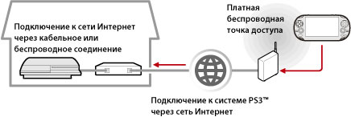

Сеть > Использование функции дистанционного воспроизведения (через Интернет)
Использование функции дистанционного воспроизведения (через Интернет)
Для использования данной функции на системе PS Vita или системе PSP™ может понадобиться обновление системного программного обеспечения системы PS3™ и системы PS Vita или системы PSP™.
С помощью устройства с поддержкой дистанционного воспроизведения, такого как система PS Vita или система PSP™, и беспроводной точки доступа можно подключиться к системе PS3™ через Интернет. Дистанционное воспроизведение возможно только в том случае, если система PS3™ работает в режиме ожидания соединения для дистанционного воспроизведения.

Подсказка
Способ подключения к беспроводной точке доступа (беспроводной локальной сети), предоставляемой в рамках платных услуг, а также стоимость подключения зависит от поставщика услуг. Подробную информацию можно получить у поставщика услуг.
Подготовка (1) (система PS3™ и устройство с поддержкой дистанционного воспроизведения)
При первом использовании функции дистанционного воспроизведения необходимо зарегистрировать (как пару) устройство с поддержкой дистанционного воспроизведения, такое как система PS Vita или система PSP™, на системе PS3™. Для регистрации (как пары) системы выберите  (Настройки) >
(Настройки) >  (Настройки дистанционного воспроизведения) > [Регистрация устройства].
(Настройки дистанционного воспроизведения) > [Регистрация устройства].
Подготовка (2) (устройство с поддержкой дистанционного воспроизведения)
Для подключения системы PS Vita или системы PSP™ к точке доступа необходимо создать сетевое соединение. Для дистанционного воспроизведения через Интернет можно воспользоваться беспроводной точкой доступа. Подробнее о настройке устройства для дистанционного воспроизведения рассказано в документации, прилагающейся к устройству.
Использование функции дистанционного воспроизведения на системе PS Vita
1. |
На системе PS3™ выберите |
|---|
 (Сеть) >
(Сеть) >  (Дистанционное воспроизведение).
(Дистанционное воспроизведение).2. |
На системе PS Vita нажмите |
|---|
 (Дистанционное воспроизведение PS3) > [Запуск].
(Дистанционное воспроизведение PS3) > [Запуск].3. |
Нажмите [Соединение через Интернет]. |
|---|
Подсказки
- Если во время дистанционного воспроизведения вы откроете экран другого приложения, через 30 секунд соединение будет завершено.
- На системе PS Vita нужно связать учетную запись Sony Entertainment Network, используемую на системе PS3™. Учетную запись, созданную на системе PS Vita или компьютере, можно использовать и на системе PS3™.
Использование функции дистанционного воспроизведения на системе PSP™
1. |
На системе PS3™ выберите |
|---|---|
2. |
На системе PSP™ выберите |
3. |
Выберите [Соединение через Интернет]. |
4. |
В списке соединений выберите соединение для точки доступа, которая используется для дистанционного воспроизведения. |
5. |
Введите идентификатор входа в сеть Sony Entertainment Network и пароль используемой учетной записи. |
 (Дистанционное воспроизведение).
(Дистанционное воспроизведение).Использование функции дистанционного воспроизведения через Интернет
При использовании некоторых сетевых устройств функция дистанционного воспроизведения через Интернет может оказаться недоступной. В этом случае воспользуйтесь приведенными ниже рекомендациями.
- Воспользуйтесь функцией [Тест - соединение с Интернетом] в разделе
 (Настройки сети) меню (Настройки), чтобы проверить возможность подключения системы PSP™ к сети Интернет и к серверу PSNSM.
(Настройки сети) меню (Настройки), чтобы проверить возможность подключения системы PSP™ к сети Интернет и к серверу PSNSM. - Если используемый маршрутизатор поддерживает UPnP, включите функцию UPnP маршрутизатора.
- Если используемый маршрутизатор не поддерживает UPnP, необходимо установить функцию переадресации портов маршрутизатора, чтобы обеспечить доступ к системе PS3™ из сети Интернет. Функцией дистанционного воспроизведения задействован порт с номером TCP:9293. Информацию об установке этой функции можно найти в руководстве по эксплуатации маршрутизатора.
- Переадресация портов – это функция перенаправления сигналов, поступающих в определенный порт (входной), на другой определенный порт (выходной). Эта операция также называется "отображением портов" или "преобразованием адресов".
- Подключение системы PS3™ к сети Интернет через два или большее количество маршрутизаторов может привести к ошибкам при обмене данными.
Подсказки
- Маршрутизатор – это устройство, позволяющее нескольким устройствам совместно использовать одну линию подключения к сети Интернет.
- Возможность передачи информации может быть ограничена средствами защиты маршрутизатора, а также поставщика услуг Интернет. См. документацию, поставляемую с сетевым устройством, и сведения, предоставляемые поставщиком услуг Интернет.